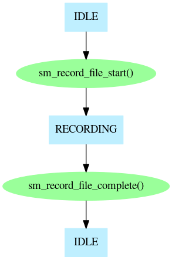
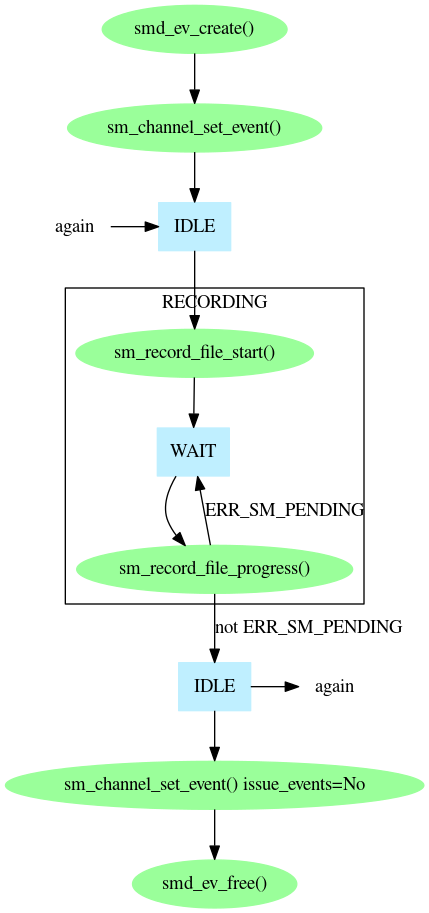
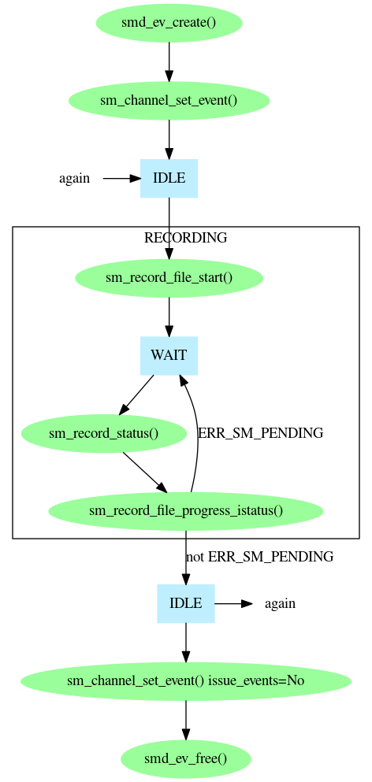
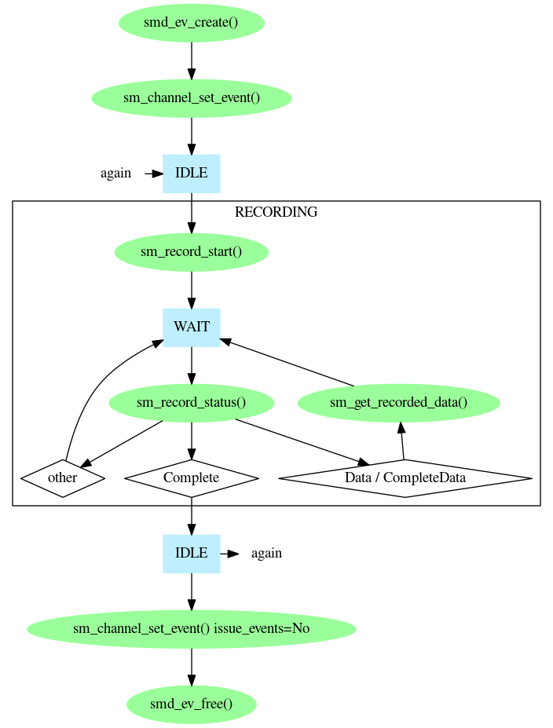

The easiest way to record data with Prosody is to use the Prosody high level FILE play/record API. This is very convenient when you want to record data into a file. However, for complete control over the recording process, you can use the low level primitives which are part of the Prosody speech processing API. All of the methods are described here.
To record data you need a Prosody channel which can perform input. This means one of the following:
The input from the channel must also have been connected appropriately. See Prosody Guide - how to use datafeeds for how to do this.
The easiest way to play data is to use sm_record_file_start() and sm_record_file_complete().

Sometimes it is useful to get the termination status of the recording. The function sm_record_file_complete_tstatus() takes an extra parameter which is the address of a status area in which the final record status can be found after the recording completes. It is used in exactly the same way as sm_record_file_complete().
Since sm_record_file_complete() does not return until the whole of the record has finished, you will need a separate thread for each record. You can avoid this by using sm_record_file_progress() instead. This only does the processing immediately necessary, so you can have a single thread which does a mixture of processing - calling sm_record_file_progress() as necessary for each channel which is recording. Of course, this means you need to know when a channel needs servicing, so you need to use a Prosody event. You create the event and associate it with the channel. Then you can perform as many records as you like, before dissociating the event from the channel and freeing the event.

Since sm_record_file_progress() performs all the processing for a record, you cannot find out the status yourself. (Don't be tempted to try calling sm_record_status() before or after calling sm_record_file_progress() as this can confuse the high-level API library and make it return errors). To allow you to find out the status safely, Prosody provides an alternative to sm_record_file_progress() which merely uses the status you supply. This function is sm_record_file_progress_istatus(). To use it, you fetch the status yourself with sm_record_status() and then call sm_record_file_progress_istatus(). This allows you, for example, to handle detection of tones which are being eliminated from the recording.

A recording is normally stopped by calling sm_record_file_stop(). which requests that the record stop. Note! Even when you stop a record like this, you must wait for the completion of the record to be reported in the usual way (such as by sm_record_file_complete() returning).
There are several reasons why the high level API may not be powerful enough for an application. For example, you may want to use a feature not supported by the high-level API or the data may not be going to a file. The use of the low-level API is reasonably straightforward:
kSMRecordStatusComplete
then the record has finished.
kSMrecordStatusData
there is data ready for collection. Call
sm_get_recorded_data()
to collect it.
You can stop the record in several ways. You can specify various termination conditions when you call sm_record_start(), or you can call sm_record_abort() to request that it stop. Note that in all cases you still must wait for sm_record_status() to indicate completion.

Note that all forms of recording can only record a single source at a time, but see also Prosody application note: recording 2-party conversations for how to use the Prosody conferencing features to record a mixture of two signals.